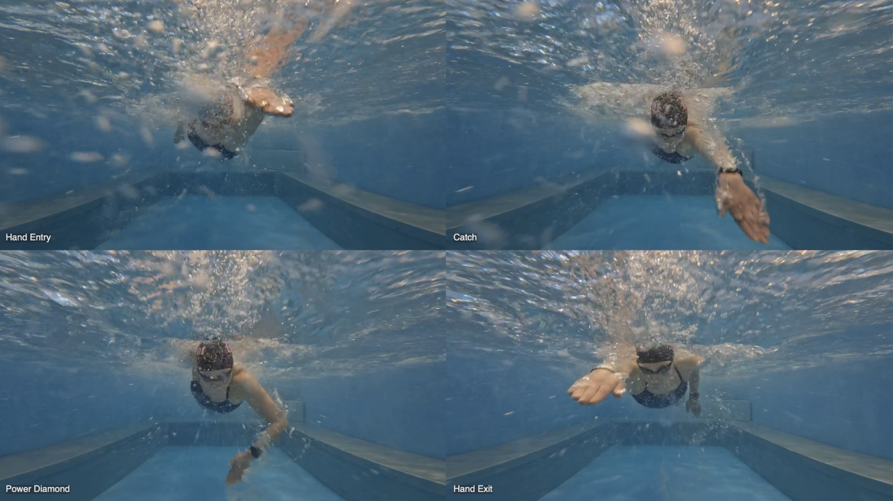

Wind tunnels are vital for obtaining aerodynamic data, testing designs, and visualizing airflow over objects. They provide controlled environments to measure force coefficients like lift and drag, analyze stability and handling, and optimize shapes to reduce drag (Washington Aerospace Scholars Curriculum, 2023).
There are several types of wind tunnels, including low-speed wind tunnels for subsonic testing and transonic/supersonic wind tunnels for high-speed testing. Techniques such as smoke trails or tufts help engineers observe airflow patterns, identify separation points, and understand boundary layer behaviors.
In aerospace, wind tunnels have been instrumental in testing aircraft designs, from subsonic commercial jets to supersonic military planes. For example, NASA’s wind tunnels have provided critical data on drag, lift, and stability, enabling the development of efficient aircraft designs (NASA, 2008).
In swimming, water tunnels or flumes are used to simulate aquatic conditions and analyze drag forces. These tools allow researchers to study the effects of body position, stroke mechanics, and swimsuit design on drag. For instance, studies conducted in water tunnels have shown that maintaining a streamlined body position can reduce drag by up to 20% (Toussaint & Truijens, 2005).
"Water Tunnle": Image source
inbalancecoaching